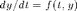
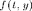
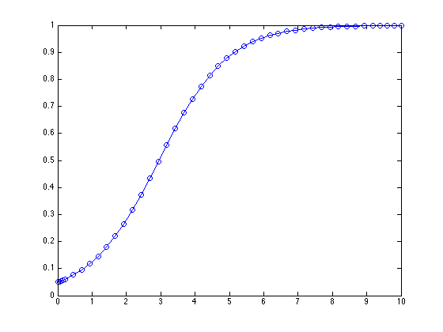
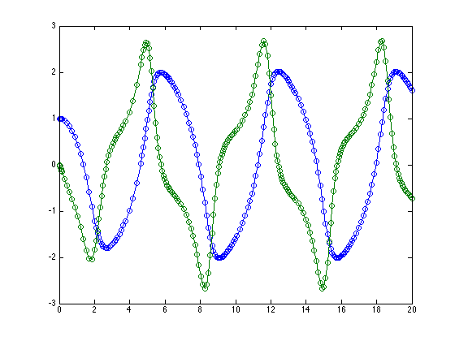
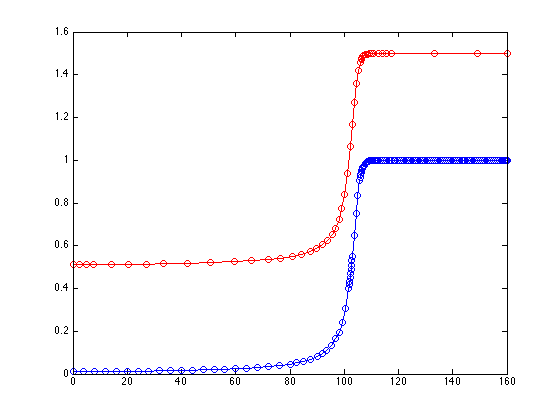
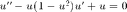
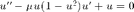
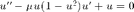

Contents
function afternoon
Functions of functions
Toby Driscoll, July 2014
close all, clear
Quadrature
There are many problems that have a function as data. For example, take the problem of transforming a function into its definite integral. Approximating this transformation numerically is called quadrature.
In order to use a function as data, we need to create it anonymously, or refer to it with an @ sign in front (handle).
integral( @sin,0,pi )
ans = 2.000000000000000
f = @(x) sin(x).*cos(x); integral(f,-pi,pi)
ans =
6.938893903907228e-17
erf1 = 2/sqrt(pi)*integral(@(t) exp(-t.^2),0,1) error = erf(1) - erf1
erf1 =
0.842700792949715
error =
0
Rootfinding
Another prototypical problem is to find a root of a function. The built-in fzero is excellent for this.
fzero(@sin,[1 4])
ans = 3.141592653589793
You can give either a starting point or a starting interval.
fzero(@sin,2.5)
ans = 3.141592653589794
Giving the starting interval is preferred. It often takes fewer iterations, because the first step is to find an interval anyway.
fzero(@sin,[1 4],optimset('display','iter'))
Func-count x f(x) Procedure
2 4 -0.756802 initial
3 2.57946 0.53299 interpolation
4 3.16648 -0.0248858 interpolation
5 3.1403 0.00129744 interpolation
6 3.14159 -1.26972e-07 interpolation
7 3.14159 3.56496e-14 interpolation
8 3.14159 1.22465e-16 interpolation
9 3.14159 1.22465e-16 interpolation
Zero found in the interval [1, 4]
ans =
3.141592653589793
fzero(@sin,2.5,optimset('display','iter'))
Search for an interval around 2.5 containing a sign change:
Func-count a f(a) b f(b) Procedure
1 2.5 0.598472 2.5 0.598472 initial interval
3 2.42929 0.653579 2.57071 0.540374 search
5 2.4 0.675463 2.6 0.515501 search
7 2.35858 0.705419 2.64142 0.479576 search
9 2.3 0.745705 2.7 0.42738 search
11 2.21716 0.798281 2.78284 0.351104 search
13 2.1 0.863209 2.9 0.239249 search
15 1.93431 0.934652 3.06569 0.0758344 search
17 1.7 0.991665 3.3 -0.157746 search
Search for a zero in the interval [1.7, 3.3]:
Func-count x f(x) Procedure
17 3.3 -0.157746 initial
18 3.08042 0.0611393 interpolation
19 3.14175 -0.000157317 interpolation
20 3.14159 9.79215e-08 interpolation
21 3.14159 -3.21625e-16 interpolation
22 3.14159 -3.21625e-16 interpolation
Zero found in the interval [1.7, 3.3]
ans =
3.141592653589794
Here's a more substantial example. The Lambert W function is defined as the inverse of the function  . In other words,
. In other words,  . For any given value of
. For any given value of  , we can solve
, we can solve  for
for  to get
to get  .
.
function w = lambertW(x) f = @(w) w*exp(w) - x; guess = log(x); w = fzero(f,guess); end
format long
point05 = lambertW( 0.05*exp(0.05) )
four = lambertW( 4*exp(4) )
point05 =
0.050000000000000
four =
4
ODEs
The third classic problem with a function as data is an ordinary differential equation, . In this case the function data is . Here is the logistic equation:
f = @(t,y) y.*(1-y);
And here is its solution for ,  .
.
[t,y] = ode45( f, [0 10], 0.05 );
plot(t,y,'o-')
 Certain problems are called "stiff" and make alternatives to ode45 desirable. For example,
f = @(t,r) r.^2-r.^3;
[t,y] = ode45(f,[0 160],0.01);
plot(t,y,'.-')
 Using the "stiff solver" ode15s requires many fewer time points (though each is more expensive to compute!).
[t,y] = ode15s(f,[0 160],0.01); hold on plot(t,y+0.5,'.-r')
clf
Second order problems have to be rewritten in first order form. For example, consider . Introducing and leads to
f = @(t,y) [ y(2); (1-y(1)^2)*y(2) - y(1) ];
[t,y] = ode45( f, [0 20], [1;0] );
plot(t,y,'o-')

Here it is in the phase plane.
plot(y(:,1),y(:,2))

Parameters
These kinds of problems are where nested and anonymous functions can be handy. Let's consider the ODE above with a parameter  : . We want to write a function for it that includes the parameter.
: . We want to write a function for it that includes the parameter.
function dydt = myode(t,y,mu) dydt = zeros(size(y)); dydt(1) = y(2); dydt(2) = mu*(1-y(1)^2)*y(2) - y(1); end
(This function is actually nested inside the one for this file.) However, the ODE solver functions will accept functions of t and y only. We can bridge the gap using a "wrapper" anonymous function.
mu = 10; f = @(t,y) myode(t,y,mu)
f =
@(t,y)myode(t,y,mu)
Now f is usable by ode45 but also includes the assigned value of mu.
[t,y] = ode45( f, [0 60], [1;0] );
plot(t,y,'o-')

Because myode is nested, it would have access to mu in the parent function if we left it out of the argument list.
function dydt = myode2(t,y) dydt = zeros(size(y)); dydt(1) = y(2); dydt(2) = mu*(1-y(1)^2)*y(2) - y(1); end
[t,y] = ode45( @myode2, [0 60], [1;0] ); plot(y(:,1),y(:,2))

The wrapper style is usually preferable, but there are some circumstances where the shared workspace of a nested function is useful.
end